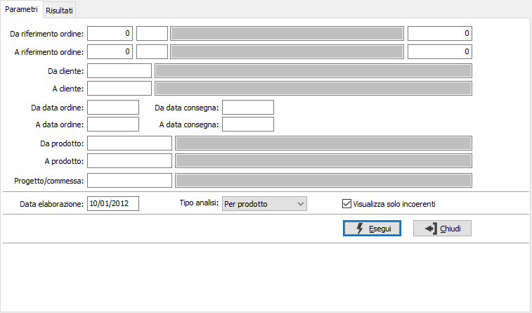
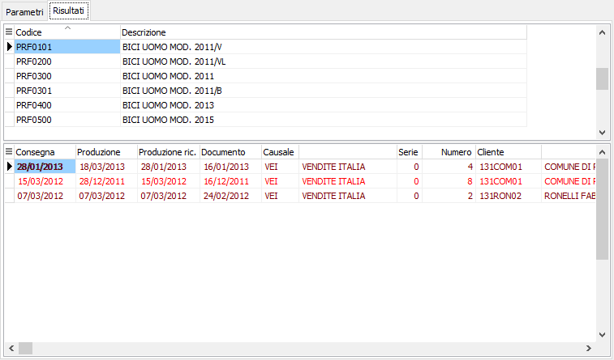

Controllo consegne
Il programma permette di controllare se gli ordini clienti possono rispettare le consegne pattuite in relazione alla pianificazione.

Nei parametri di selezione è possibile impostare i prodotti, i clienti e gli ordini da analizzare; è possibile ordinare i risultati per prodotto o per cliente e, tramite la casella di spunta, includere solo gli ordini con problematiche di consegna o tutti.
Nella griglia dei Risultati vengono riportati per ogni rigo di ordine oltre i riferimenti la data di produzione, la data di consegna ed una data di produzione ricalcolata in relazione alla data di consegna considerando i tempi di consegna del cliente; i calcoli sulle date vengono effettuati considerando sempre il calendario aziendale.
Dalla pagina Risultati, tramite i pulsanti presenti nella Toolbar sarà possibile effettuare la stampa e con il doppio clic del mouse sull'ordine accedere direttamente alla manutenzione.
Vengono analizzati gli ordini clienti ed in relazione alla data di elaborazione raffrontata con la data di produzione, la data di consegna e la data di consegna effettiva calcolata sulla base del periodo di consegna del cliente riportati i dati in colori differenti in modo da far capire immediatamente all'operatore lo stato degli ordini:
rosso: indica che la data di produzione o la data di consegna presente sull'ordine sono antecedenti alla data di elaborazione;
marrone: indica che la data di produzione o la data di consegna presente sull'ordine sono successive alla data di elaborazione e la data di produzione è uguale o successiva alla data di consegna;
blu: indica che la data di produzione è coerente con la data di consegna, ma antecedente a quella ricalcolata in base ai tempi di consegna;
verde: indica che la data di produzione è coerente con la data di consegna.
